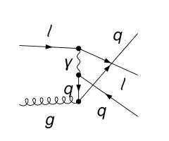
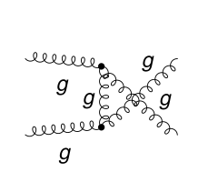
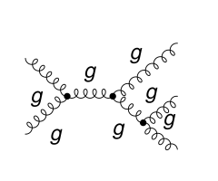

One Feynman-diagram calculation, many facets
One Feynman-diagram calculation, many facets
FeynFacet derives perturbative results in quantum field theory from Feynman diagrams. Every calculation follows one chain of steps: diagrams, spin and color algebra, integration-by-parts reduction, master integrals, renormalization, and the factorization or matching that the observable requires. A new observable reuses the chain and changes only what it needs. The chain is written as executable Mathematica notebooks that a physicist can read cell by cell, with three independent implementations of the spin and color algebra.
The calculations released here give the NLO partonic hard functions for single-inclusive hadron and jet production in proton–proton and lepton–proton collisions, for unpolarized and longitudinally polarized beams, the double-transverse spin asymmetry $A_{TT}$ in proton–proton collisions, NLO TMDPDF matching coefficients and soft functions, and two new results: the NLO transverse spin transfer in lepton–quark scattering, which enters transverse-spin measurements at the Electron-Ion Collider, and the NLO transverse spin transfer in proton–proton collisions. Every published result is rederived, not copied, and compared with the literature: identically where the published coefficients are analytic expressions, otherwise with the reference codes at many points to their numerical precision.







Getting started
An AI coding agent installs and checks the tools for you; you do not need to set them up one by one.
- Install Mathematica and clone the repository.
- Start the agent in the repository folder, with permission to run Mathematica and the external tools without
approving each command: Codex with
codex --approve-for-me(or “Approve for me” under/permissionsat the start of a session); Claude Code in auto mode (Shift+Tab, orclaude --permission-mode auto). The tools write to their user and temporary directories, which a restrictive sandbox blocks. - Paste the setup prompt below. The agent installs FeynCalc, FeynArts, FORM, Tracer, Kira, Fermat and SubTropica and runs the toolchain check until it reports READY.
Set up FeynFacet on this machine. Install the tools it needs, following docs/INSTALL.md (docs/INSTALL-macOS.md on a Mac; on Apple silicon, build Kira with tools/install_kira.py as described there), and run python3 feynfacet.py check --all-routes until it reports READY. Ask me before anything that needs an administrator password.
The installation notes are what the agent follows. Mathematica and its license stay with you, and the agent asks before anything that needs your administrator password; on a Mac this includes Homebrew and Apple's Command Line Tools for Xcode. On Apple silicon the agent builds a patched Kira, since the Kira 3.1 release build can silently return wrong reductions there (details); this one-time build takes a few minutes.
Then reproduce a calculation (Reproduce) or let the agent compute a new process (Example).
The standard
A result is shown here only when it meets all four requirements:
- Three algebra routes. The squared matrix elements are computed independently with FeynCalc, FORM and Tracer. For proton–proton collisions the three squares must agree before any integration (in exact rational arithmetic at two random rational points of all variables, every scalar integral given its own value); the integration and assembly act on each route's squares, and the finite coefficients are compared across routes. For the lepton–proton and TMD calculations the finite coefficients of the three routes agree symbolically.
- Published benchmarks and crossing. For known results, the finite coefficients agree with the published coefficients or the reference codes: identically where analytic expressions are available, otherwise to the precision of the reference at many points. The new transverse spin transfer in proton–proton collisions is tied to the published double-transverse result by a generalized crossing symmetry found in this calculation (verified symbolically at Born level and at exact test points at NLO).
- Every step visible. Diagram generation (FeynArts), traces, reverse unitarity, Kira reduction, master
integrals (SubTropica), threshold expansion, renormalization and factorization are cells of the notebooks; every
check is a visible
Requirethat stops the calculation if it fails (pole cancellation, Born tables, scale dependence, and gauge invariance where it is tested). - Usable without the tools. The final coefficients are plain expressions in
Coefficients/, with a stand-alone evaluator that checks itself against 50-digit reference values.
The results
| Result | Process | Status | Compared with |
|---|---|---|---|
| Transverse spin transfer in lepton–quark scattering | $\ell\, q^{\uparrow} \to q^{\uparrow} + X$ at NLO; resolved-photon Born channels | new | new |
| Transverse spin transfer in proton–proton collisions | $a^{\uparrow} b \to c^{\uparrow} + X$ at NLO, seven channel classes | new | related to the double-transverse result by a generalized crossing symmetry found in this calculation |
| Proton–proton collisions: the 16 channel classes | $a\,b \to c + X$, spin average and double-longitudinal helicity difference | known, rederived | Aversa, Chiappetta, Greco, Guillet (1989); Jäger, Schäfer, Stratmann, Vogelsang (2003) |
| Double-transverse proton–proton collisions | $a^{\uparrow} b^{\uparrow} \to c + X$ ($A_{TT}$), five channel classes | known, rederived | Mukherjee, Stratmann, Vogelsang (2005), their Fortran code |
| Lepton–quark scattering | $\ell\, q \to q + X$, unpolarized and double-longitudinal | known, rederived | Hinderer, Schlegel, Vogelsang (2015, 2017) |
| Lepton–quark and lepton–gluon, other tagged parton | $\ell\, q \to g + X$ and $\ell\, g \to q + X$ | known, rederived | Hinderer, Schlegel, Vogelsang (2015, 2017) |
| TMD beam functions and soft function | quark and gluon TMD PDFs at NLO, exponential rapidity regulator | known, rederived | Luo, Yang, Zhu, Zhu (2021) |
| Born table | all $2\to2$ partonic channels in $D$ dimensions, unpolarized and helicity difference | known, rederived | Ellis, Stirling, Webber (Table 7.1); helicity and crossing relations |
How it was made
The calculations were carried out by AI agents working with physicists: the agents wrote and ran the process programs and used physics checks to locate and correct inconsistencies; the physicists specified the problems and reviewed the results. The paper describes the workflow (arXiv); these pages present the calculation itself.